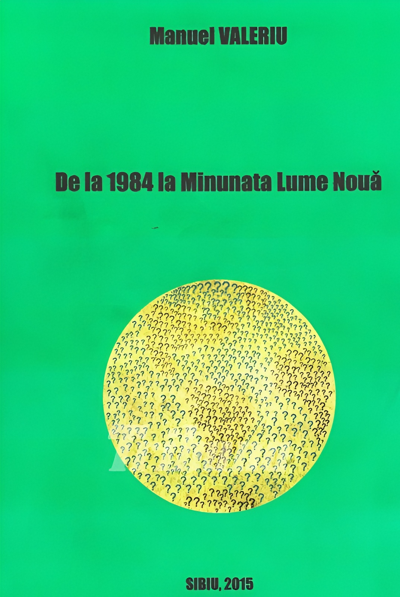

Când rostim numele Cassandrei, ne trec prin minte numeroase gânduri referitoare la neputința și drama celui ce strigă adevărul fără a fi luat în seamă, ba chiar riscând să fie trecut în rândul nebunilor. Despre tragicul personaj mitologic se spune că ar fi fost blestemat să spună exact ce se va întâmpla, fără a fi crezut. Puternica idee a soartei necruțătoare răzbate în vechea mentalitate greco-romană, astfel încât atenția nu se îndreaptă spre curajul profetului, ci spre cruzimea zeului care transformă un dar într-unul otrăvit, având consecințe nu doar asupra persoanei vinovate de încălcarea cuvântului (Cassandra, în speță), ci asupra unui întreg neam. Tensiunea mitului este mai complexă, desigur, însă reținem totuși profilul profetului în antichitatea elenă. În spațiul iudeo-creștin, profetul este trimisul însărcinat cu transmiterea intenției divine, iar în lumina nou-testamentară iese în evidență ideea profeției ca talant ce responsabilizează.
Orice om care a primit darul discernământului, devenind o conștiință trează, este administratorul (nu posesorul absolut) unui dar neprețuit și are datoria de a înmulți ceea ce a primit. De aceea, el poate fi în diferite grade un profet – ce strigă în pustiu sau, în cazul fericit, găsește „urechi de auzit”. Nu spre zădărnicia strigătului Cassandrei ne îndreptăm privirea, ci spre responsabilitatea ce devine rostul celui care înțelege mai mult decât semenii săi. Nu intrăm în discuția despre falși profeți, false conștiințe care împing omenirea în utopii (adică distopii, într-un final) și nici o abordare teologică nu este aici urmărită. Ne interesează acele voci care vin cu numeroase temeiuri și spun mulțimilor grăbite spre ceva ce pare bun: stați puțin, lucrurile nu sunt deloc așa cum sunt trâmbițate.
Manuel Valeriu și-a propus, prin activitatea sa de profesor, traducător și scriitor, să aducă la lumină cât mai multe voci purtătoare de adevăr și este el însuși o conștiință a prezentului. Dintre cărțile traduse, enumăr: Eu, Simah, prefectul Romei, urmat de Omul și mașina (Thomas Molnar, Ed. Logos, 2013), Modelul deformat. America, de la Tocqueville la Carter (Thomas Molnar, Ed. Logos, 2016), Transumanismul decriptat. Metamorfoza navei lui Tezeu (Pr. Jean Boboc, Ed. Doxologia, 2020), Cavalerul de duminică (Olga de Pitray, Ed. Predania, 2022). Iar cărțile de autor pe care le am în vedere sunt: Invitație la lectură. De ce nu sunt toate roz? (Sibiu, 2014) și De la 1984 la minunata Lume nouă (Sibiu, 2015). Ambele cărți sunt realizate în regie proprie, având ISBN ocazional. Și prin acestea, M. Valeriu face dovada erudiției și a interesului pentru temele vitale, detașându-se de intelectualii „căldicei”, aceia care cred că pot sluji la doi (sau la mai mulți) stăpâni. Rămânând în același orizont de exprimare, este de apreciat când lucrătorul înțelege că datoria de a înmulți talantul nu este un act mecanic, axat pe o perfecționare (autistă) a procesului, ci constituie semnul unei relații vii pe orizontală și pe verticală, cu celălalt și Celălalt. Detașat de iluziile așezării pe un piedestal de „autor”, „intelectual” etc. ce schimbă lumea prin istețimea sa, și conștient de limitările omenești (personale și esențiale), orice lucrător pe acest tărâm are șansa de a fi smochin roditor.
Cu suficient umor, M. Valeriu îl ajută pe cititor să înțeleagă (sau să înțeleagă mai bine) că din punct de vedere moral și cultural lumea noastră a devenit una de liliputani. Însă nu este cea mai bună comparație, pentru că Liliput este omenirea la scară redusă. Altul este peisajul creat de regula „se poate orice și oricum, dacă așa s-a votat”. Spiritul relativizării amestecă ierarhiile, le dizolvă, face uriași din pitici și invers, face dumnezei din materie și patimi, iar pe Dumnezeu îl zugrăvește ca pe un dușman. Nu întâmplător industria cinematografică resemnifică rolul îngerilor căzuți și al monștrilor de orice fel, prezentându-i drept victime și invitându-l mai mult sau mai puțin subtil pe spectator să empatizeze cu formele răului. Un mecanism foarte perfid de schimbare a minții sau mai bine spus de întoarcere a minții împotriva ei înseși. Pentru că rezultatele acestui mecanism sfidează rațiunea și orice așezare în făgașul firescului.
În demersul de a face lumină în „zona crepusculară” a realității prezente, Manuel Valeriu aduce voci cu mare autoritate. Sunt multe domenii unde adevărul agonizează, însă cel mai dureros este acela al educației, pentru implicațiile multiple și profunde. De aceea și domnia sa consacră o mare atenție autorilor care avertizeză că direcția adoptată nu este deloc bună. Pentru că cele două cărți surprind idei-cheie privitoare la societate, cultură și educație, politică, mentalități, cu scopul de a diagnostica, preveni și îndrepta ce mai poate fi îndreptat. Autorii ale căror idei sunt selectate ca temă de reflecție sunt de fapt conștiințe treze – precum Thomas Molnar – ale acestor vremuri. Sperăm să fie măcar în parte luați în seamă și nu doar simple voci de Cassandre. Oricum, ei și-au făcut datoria, profeții au folosit curajos talanții. Rămâne ca și urechile lumii să nu rămână închise, pentru că orice act de comunicare presupune o dublă responsabilitate.
Așadar, destul de incomode pentru ideologia dominantă, cele două cărți ale lui M. Valeriu prezintă – prin vocea proprie și mai ales a unor autori valoroși – într-un mod dinamic și captivant, lupta perenă dintre civilizație și barbarie. Iar locul bătăliilor este în ultimă instanță sufletul omului, predispus cel mai mult la influențe (benigne și maligne) în anii formării; iar în era „șmecherocrației” (p. 86, Invitație la lectură. De ce nu sunt toate roz?) influențele sunt, precum modelele din vitrina mass-mediei, preponderent negative. De aceea, las deoparte alte domenii de interes, pe care cititorii le vor regăsi în cărțile citate, și îmi îndrept atenția spre cea mai importantă redută a unei cetăți: educația, supusă (și) în România unui asalt mult amplificat în ultimele cinci, șase luni. Panoplia problemelor de care se plâng acești autori este generoasă, prea generoasă pentru a nu fi ispitiți de gândul că lupta este deja pierdută. Autorii selectați de domnul Manuel Valeriu sunt în special francezi, nu doar pentru că este un foarte bun cunoscător al limbii și literaturii franceze, ci mai ales pentru a demonstra – cât se poate de convingător – că nu există niciun interes în spațiul cultural românesc de a promova cărți ce nu se aliniază curentului ideologic dominant. Nu este vorba despre cărți obscure, ci despre lucrări premiate, de pildă, chiar de Academia Franceză. Este vorba despre autori care au un cuvânt greu de spus în domeniul cultural-educațional, care au venit cu probe de netăgăduit în sprijinul ideilor exprimate. Însă, pentru că (e greu să mai avem vreo îndoială în acest sens) țara noastră a devenit un teren de experimentare, sunt trecute cu vederea aproape toate cărțile și autorii incomozi. Între timp, ei au devenit (unii au fost dintotdeauna) indezirabili și în țara de origine, precum și acolo unde au ajuns să predea și să scrie, dacă s-au opus, de exemplu:
Pentru că în cele două cărți (scrise parcă pentru ziua de azi) ale d-lui Manuel Valeriu sunt atât de multe citate care punctează aspecte dureroase ale stării de fapt din educație, a fost dificil să aleg, ținând cont de spațiul limitat. Iată câteva dintre acestea, cu mențiunea că paginile citate sunt acelea unde pot fi găsite fragmentele în cartea lui M. Valeriu, care, desigur, citează lucrările și oferă informații suplimentare despre autor și operă. Cu o excepție sau două, cărțile și studiile la care se face referire nu sunt traduse în limba română.
Din Invitație la lectură. De ce nu sunt toate roz?:
„Nimeni nu contestă starea de rău care slăbește de ani de zile Educația națională. Nu există vreun ministru care să nu semneze cu privire la acest aspect o «reformă» tot atât de răsunătoare pe cât de goală de conținut – în orice caz, inoperantă. Noi nu ieșim din această alternativă între ajustările tehnice minore – frecție la un picior de lemn – și logoree magică” (…) Teoriile despre copilul autonom și cetățean fac să dispară autoritatea, care nu mai are rațiune de a fi. Copilul nu-i așa cum spun teoreticienii pedagogiei, el este încă iresponsabil, el trebuie supravegheat și uneori constrâns, altfel va semăna cu acei despoți cărora li se dă prea multă putere față de cât ar putea duce”. (pp. 97-98; Chantal Delson, scriitoare, membră a Academiei Franceze, profesoară la Universitatea Marne-la Vallée, directoare a Centre dʼétudes européennes).
„Trebuie deci rescrisă istoria, proiect de esență totalitară. Se plănuiește deci o adevărată mutilare psihologică, cu scopul de a izola generațiile viitoare de trecutul lor” (…) Ascunzându-se în spatele drepturilor omului, pe care evită să le definească, și care, în formă extinsă, maschează revendicările comuniste, psihopedagogii vor să insufle elevilor lor o mentalitate colectivistă” (p. 100; Pascal Bernardin, profesor de matematică).

Din cartea De la 1984 la minunata Lume nouă:
„Cultura franceză și europeană a fost pusă la stâlpul infamiei ca fiind responsabilă de marile crime ale Europei, iar Școala participă din plin la refuzul Franței și al Europei de a continua această cultură; francezii și europenii timpului nostru sunt drepți și virtuoși, ei nu doresc să mai aibă nimic în comun cu strămoșii lor, care nu erau așa. Ei nu își mai dau seama de admirabila fecunditate intelectuală și culturală de care a fost capabilă civilizația lor timp de secole, ea nu mai are valoare în ochii lor. (…) Nu poate exista Școală fără disciplină. De altfel, cuvântul însuși o dovedește. «Discipulus» înseamnă, în latină, elev. Disciplina înseamnă deci ansamblul comportamentelor, coduitelor și atitudinilor așteptate din partea unui elev demn de acest nume. Din păcate, această noțiune esențială a fost alungată din discursul care definește concepția despre Școală și înlocuită cu drepturile elevilor și drepturile părinților. Din reformă în reformă, calitatea învățământului s-a tot degradat. Este vorba, într-adevăr, de a planifica dezvoltarea carențelor intelectuale atât de utile pentru a fabrica niște creiere docile, formatate pentru singura întrebuințare căreia le sunt destinate. Ceea ce contează pentru acești gestionari ai momentului este de a dispune de instrumente umane utilizabile imediat. Ei nu își dau seama că formarea intelectuală, în care cultura generală, «umanioarele», cum se spunea, formează și structurează inteligențele, oferă o cunoaștere care permite stăpânirea subiectelor abordate și alimentarea bunului simț”. (pp. 81-82; Laurent Lafforgue, academician, laureat, la 35 de ani, al prestigioasei medalii Fields, Nobel-ul matematicienilor).
„Această dictatură a pedagogiei a progresat sever în deformarea bietelor capete care ascultă de ea, dar Statul nu se sinchisește de asta, ci își fixează atenția doar asupra crizei economice, la sporirea căreia contribuie și el. În anumite școli, ideea de patrie este bagatelizată și asimilată xenofobiei și rasismului”. (p. 83; Marcel De Corte, universitar belgian).
„Corectitudinea pedagogică este lobotomia mentală a noilor generații, este discursul dominant al postmodernității în educație, noua îmbrăcăminte a spiritului revoluționar și marxismului. Este instaurarea, în serviciul revoluției mondialiste, a proletarului spiritual absolut, spălat pe creier, fără identitate, ușor jucăuș, limitat doar la exigențele vieții în societatea multiculturală. Această corectitudine pedagogică este un oribil amestec al marxismului stângist postsovietic și al ideologiei comerciale și consumiste”. (p. 84; Olivier Pichon, profesor, doctor în istorie).
Cel mai mare mit contemporan cu privire la educație este ideea lipsei de importanță a cunoașterii. Toate justificările abandonului cunoașterii sunt false, fiindcă ele neagă modul în care creierul uman funcționează. Știința nu este de partea pedagogilor progresiști. Cercetările efectuate în ultimii 50 de ani de psihologia cognitivă arată clar felul în care noi depindem de cunoștințele stocate în memoria lungă pentru toate procedeele noastre mentale. Este deci important să învățăm pe de rost lucrurile, chiar dacă ele nu au o utilitate imediată. (…) Cercetătorii au arătat că memoria lungă este soclul inteligenței umane. Astfel, Herbert Simon, laureat al premiului Nobel, afirmă că «în fiecare domeniu explorat de spiritul uman, o știință considerabilă este necesară ca prealabilă a oricărei practici de expert». E o prăpastie între abordarea care pune copilul în centrul procesului de învățare și statutul acordat învățării de către instituția educativă, care denigrează în permanență importanța de a ști și de a memora. Problema cu abordările care pun copilul în centrul învățării este că acesta se dezorientează repede, nu înțelege conceptele fundamentale și pierde timpul cu lucrurile secundare. Nu e o prejudecată: studiu după studiu, ne dăm seama de binefacerile unei abordări care așază profesorul în centrul dispozitivului de învățare”. (Daisy Christodoulou, profesoară britanică, autoarea cărții de top în U.K., Seven Myths About Education, apărută în 2013).